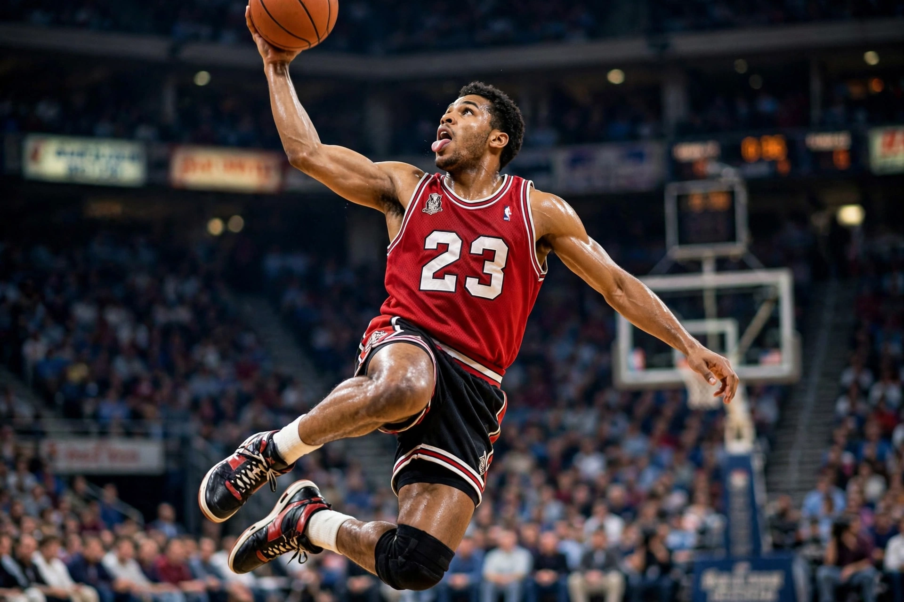

From Wikipedia, the free encyclopedia
| Michael Jordan | |
|---|---|
 Michael Jordan in a red Chicago Bulls number 23 jersey, soaring for a dunk, tongue out | |
| Born | 17 February 1963, Brooklyn, New York, US |
| Height | 6 ft 6 in (1.98 m) |
| Position | Shooting guard |
| Career | Chicago Bulls (1984–1993, 1995–1998); Washington Wizards (2001–2003) |
| Championships | 6 × NBA champion (1991–1993, 1996–1998) |
| Awards | 6 × NBA Finals MVP; 5 × NBA MVP; 14 × All-Star |
Michael Jeffrey Jordan (born 17 February 1963), also known by his initials MJ, is an American businessman and former professional basketball player. He played fifteen seasons in the National Basketball Association (NBA) between 1984 and 2003, winning six NBA championships with the Chicago Bulls. Widely considered the greatest basketball player of all time, Jordan was integral in popularising basketball and the NBA around the world in the 1980s and 1990s, becoming a global cultural icon.
Jordan played college basketball at North Carolina, hitting the championship-winning shot in the 1982 NCAA final, and won Olympic gold with the United States in 1984 and again in 1992 with the celebrated "Dream Team". Drafted third overall by Chicago in 1984, he won two consecutive three-peats (1991–1993, 1996–1998), retiring briefly in 1993 to play minor-league baseball after his father's murder, then returning in 1995 with the famous "I'm back" announcement. The 1995–96 Bulls won a then-record 72 games; Jordan's final Bulls shot, over Bryon Russell in Game 6 of the 1998 Finals, is among the most replayed moments in sport. He later played two seasons with the Washington Wizards and became a team owner, formerly of the Charlotte Hornets.
Jordan's marketing deal with Nike created the Air Jordan brand, which transformed athlete endorsements and sneaker culture. He starred in the 1996 film Space Jam. He was inducted into the Naismith Memorial Basketball Hall of Fame in 2009, and his rivalry-era peers — Magic Johnson, Larry Bird — and successors such as LeBron James frame the ongoing "GOAT" debate.
Categories: 1963 births | Living people | American men's basketball players | Chicago Bulls players